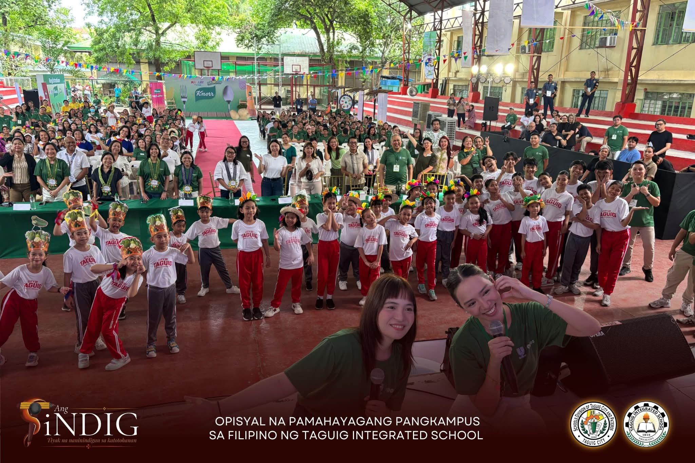
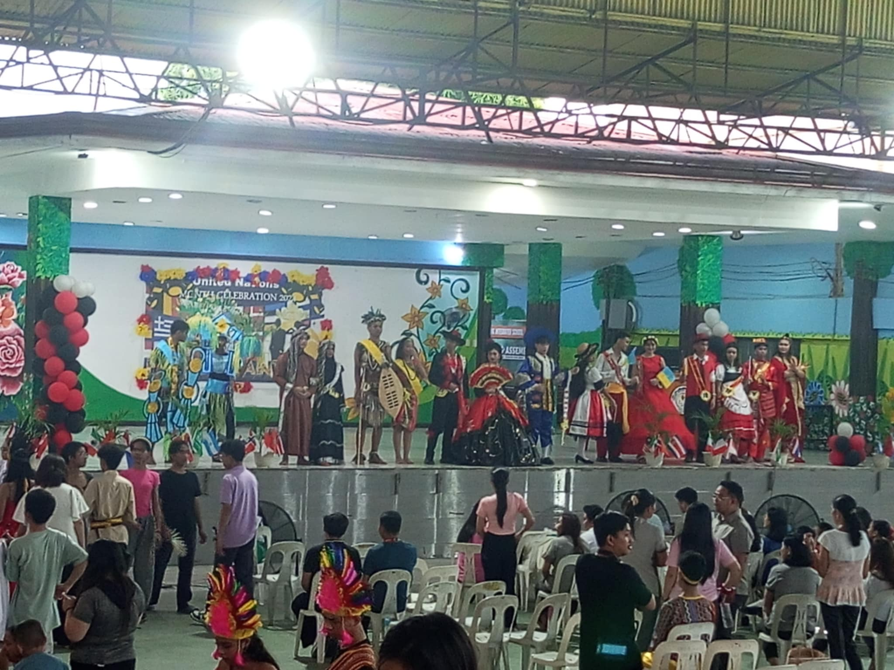
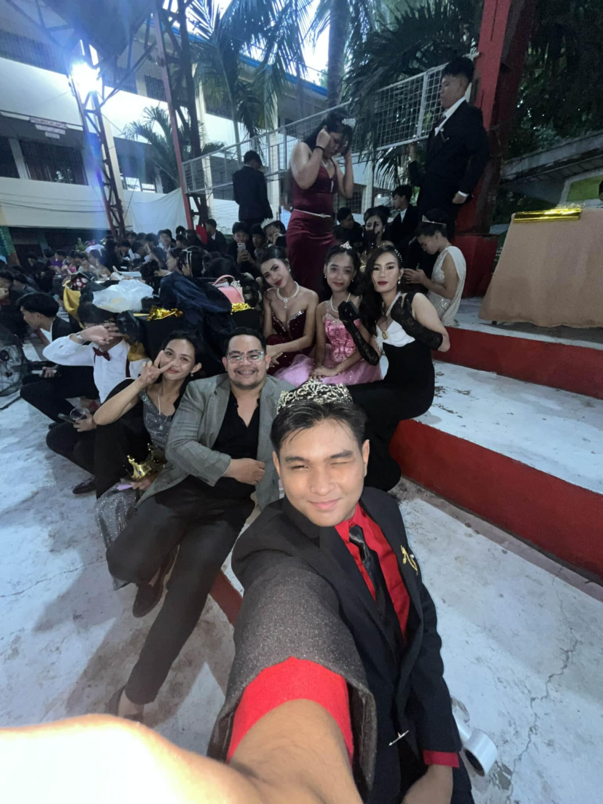
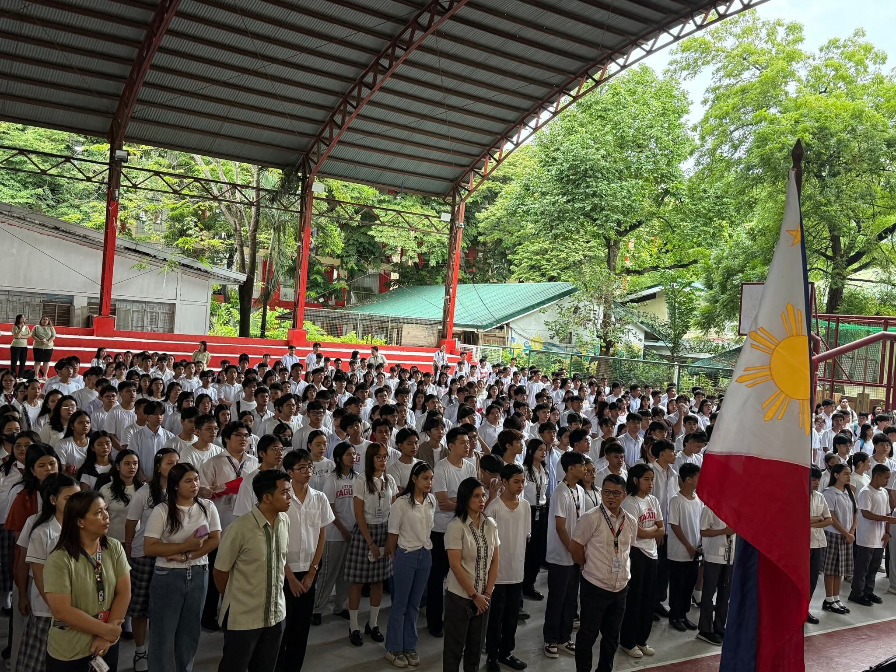
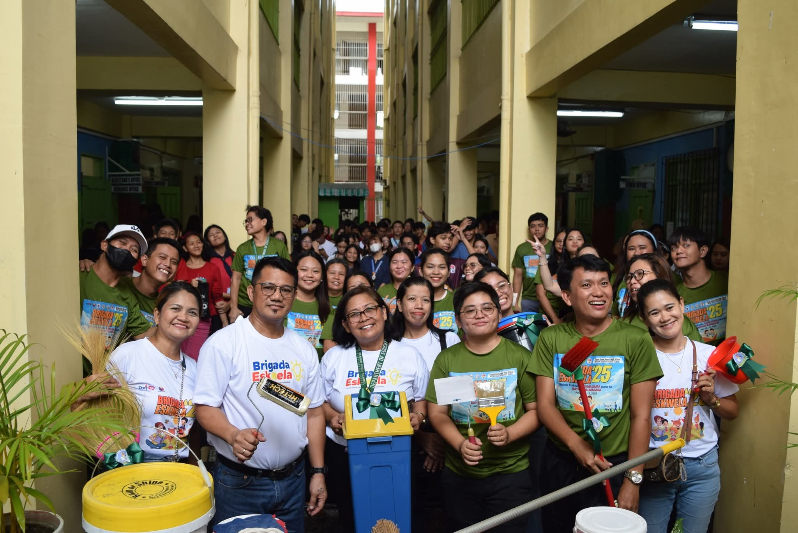

STAND ALONE SENIOR HIGH SCHOOL-TIS
GALLERY
 |
 |
 |
The Grade 10 Moving-Up Ceremony of Taguig Integrated School was a meaningful milestone that honored students’ hard work, growth, and accomplishments throughout their junior high school journey. With pride and excitement, they stepped forward—ready to embrace the next chapter as senior high school students. |
Taguig Integrated School held a fun and lively Nutrition Month celebration. We enjoyed the performances and learned the importance of healthy living.
|
The UN Celebration at Taguig Integrated School was full of color and culture. Students wore different national costumes and represented various countries.
|
 |
 |
 |
The Grade 10 Graduation Ball was a night of elegance, joy, and unforgettable memories as students celebrated the end of their junior high journey. Dressed in their finest, they danced, laughed, and shared moments that marked a beautiful closing to one chapter and the beginning of another. |
The first flag ceremony of Stand Alone Senior High School for S.Y. 2025–2026 marked the official start of the academic year. The event was filled with pride, hope, and a renewed commitment to learning and nation-building. |
The Stand Alone Senior High School officially launched Brigada Eskwela 2025 with a community-driven clean-up and preparation activity. Students, teachers, and parents came together to show unity and support for a safe and ready learning environment |
CRUZ,ARIANA N.
11-PRODUCTION